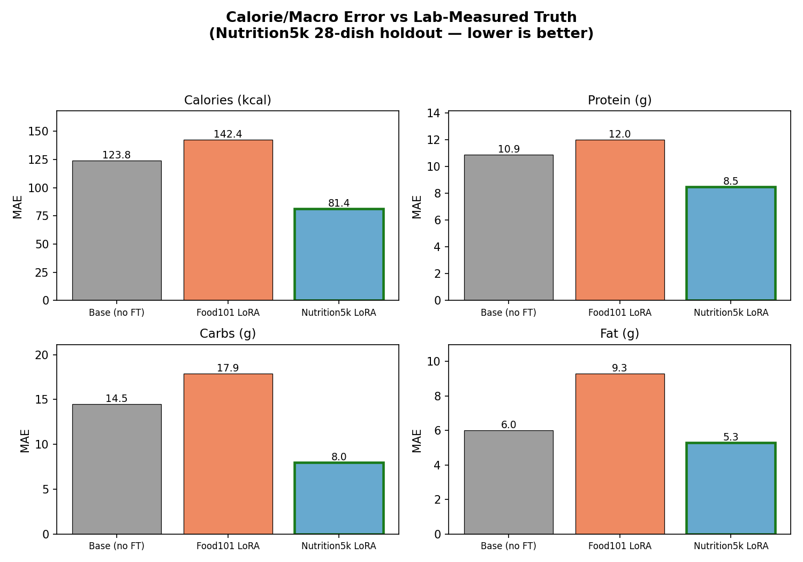

Nutrition
Coach
A QLoRA fine-tune that reads a plate and returns calories & macros as JSON — and a study of why label quality, not model size, won.
A photo hides
most of the calories.
From a single overhead image, a model must infer portion size, density, oil, and hidden ingredients — signals that aren't fully visible. The goal: turn one plate photo into reliable, structured nutrition.
One image in,
JSON out.
Every prediction is a fixed schema — directly usable by an app. 100% valid-JSON on the held-out set.
"food_name": "dish",
"serving_description": "371g serving",
"calories": 430.0,
"protein_g": 30.0,
"carbs_g": 40.0,
"fat_g": 20.0
}
Two datasets.
Which labels win?
347 training images each · clean 28-dish Nutrition5k holdout for scoring.
From plates to benchmarks.
Low loss isn't
always learning.
Pretty

Nutrition5k
wins every
nutrient.
Lower bars are better. The green-outlined model — trained on real measured data — has the lowest error on calories, protein, carbs, and fat.
Per-nutrient error
| Nutrient | Base | Food101 | Nutrition5k |
|---|---|---|---|
| Calories (kcal) | 123.8 | 142.4 | 81.4 |
| Protein (g) | 10.9 | 12.0 | 8.5 |
| Carbs (g) | 14.5 | 17.9 | 8.0 |
| Fat (g) | 6.0 | 9.3 | 5.3 |
Carbohydrate error nearly halved vs. the base model — and Food101 is worse on every row.
worse than no fine-tuning.
Confident,
but wrong.
Forced into 101 buckets, the model collapses different dishes into a few classes — then emits each class's fixed average. It learns a confident mapping that ignores the actual plate.
- 01MPS too slow for trainingBackward pass through the vision encoder stalled for hours on Apple Silicon → moved training to a Kaggle T4.
- 02bf16 GradScaler crash on T4Mixed-precision scaler couldn't unscale bf16 grads → disabled AMP; 4-bit base still computes in fp16 internally.
- 03Corrupted 3.7GB save recoveredA wrong save path bundled the quantized base → wrote a safetensors tool to extract the clean 33MB LoRA adapter.
The toolchain
Train on cloud GPU · ship a 33MB adapter · run inference anywhere.
- →Label quality beats model tweaks.Real measured data cut calorie error ~34% vs. base; synthetic labels made it worse.
- →A pretty loss curve can lie.Food101's 0.04 loss was memorization; Nutrition5k's 0.41 plateau was the honest signal.
- →Next: scale the real data.Only 347 of 4,768 Nutrition5k dishes were used — more should push error lower still.